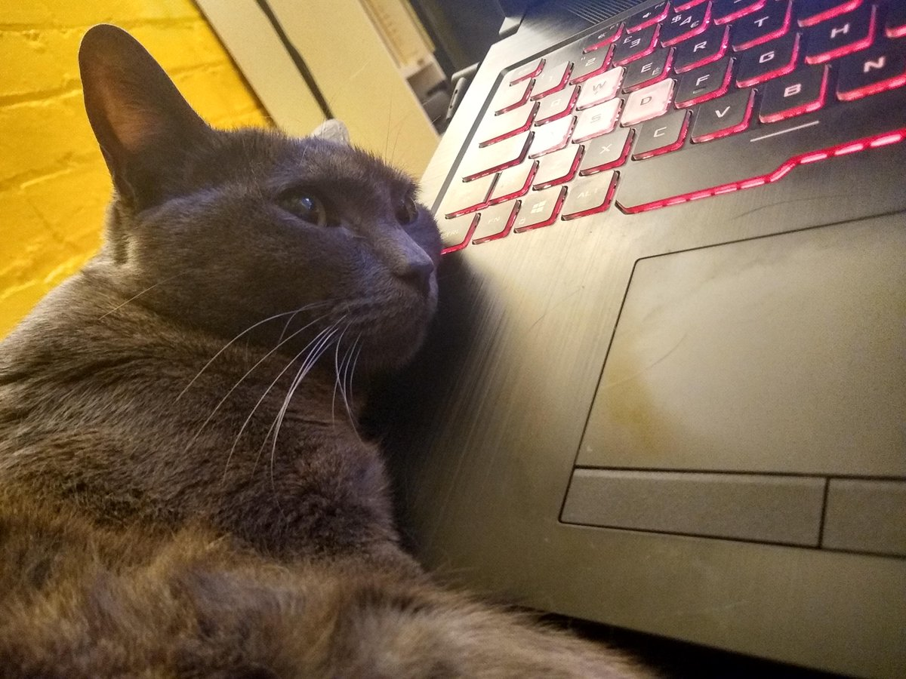
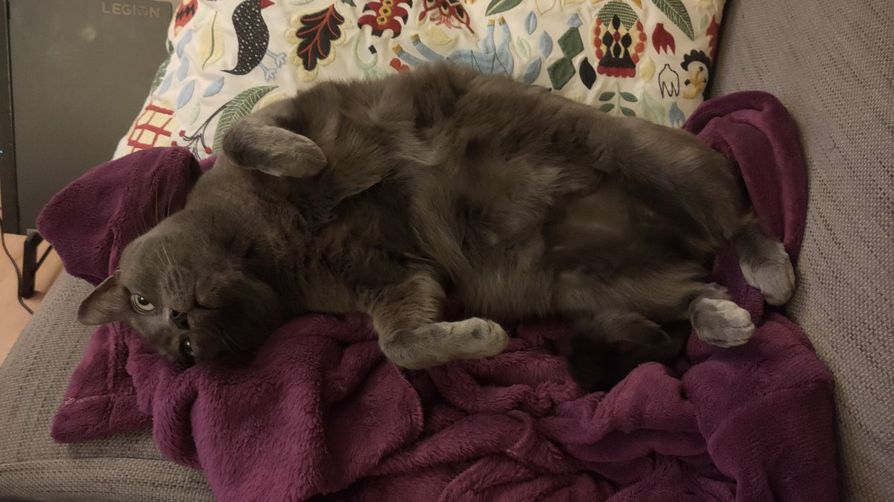

Some more next fest sampling and Aloft is looking interesting.
Very craft and build and flying islands kinda thing. Coop i think but we have not tried yet.
Feels good and it gets a lot of the tree punching progress balanced right so far :)
https://twitter.com/spadgy_OTA/status/1537441946704019457 @spadgy_OTA https://store.steampowered.com/app/410000/Chalo_Chalo/
A slightly more modern something from the same stock.
and BMX simulator C64 is another one I don't think you have mentioned.
Scanning through steams endless list of next fest demos and world turtles looks like something to try. Giving me a bit of a settlers vibe.
-- This is mostly a reminder to self :)
Boil a pound of sugar to the candy degree, remove from the fire add a pound of sweet potatoes, boiled and pressed through a sieve. Return to the fire and cook until thick, stirring constantly; then add half a pineapple grated and cook a few minutes more. Serve in sherbet glasses. https://twitter.com/gutenberg_new/status/1533242256093720577
https://twitter.com/mousefountain/status/1532753711369531392 @mousefountain Back in the fractal years people would get upset about others finding/stealing "their" mandlebrot set location and generating similar images.
People be cray cray.
Three stages of programming.
Museums/etc ask if art can be video games all the fecking time.
Previous questions over the past decades include but are not limited to.
Can art be a Rap. Can art be a DJ. Can art be a Minecraft. Can art be a Influencer. https://twitter.com/MisterABK/status/1528458101787181056
https://twitter.com/IcepickInTheory/status/1526492591730089985 @IcepickInTheory I tried to get your picture, in the picture as well, but the light balance was all off so you could only really see one or the other.
Then all that fidgeting means he just woke up and looked at me so I gave up.
https://twitter.com/IcepickInTheory/status/1526236625872867330 @IcepickInTheory

https://twitter.com/Ghegwldkxjx/status/1523450603745120256 @IsiahGibbs All just random test code but there is a moon rise as that video ends. The video just ended on the darkest transition point with both sun and moon turned down for a few seconds. The "night" is more of a blue tint with moon shadows than darkness.
All about the sunsets.
I have used my cryptographic skills to analyze all the available data and predict the probable future.
Steam Deck
Steam Dock
Steam Dyck
I'm guessing this and the other games that just popped up on steam is due to sun-setting the Bethesda launcher. https://twitter.com/WhatsOnSteam/status/1519001660626030597
https://twitter.com/mattdinniman/status/1518432052118364161 @mattdinniman I'd recommend a 10 second timer after last card played before things are resolved and cards applied.
So nothing happens until no one plays a card for a set amount of time.
Extra tension and lets you have a series of hands rather than just chaos but no enforced turns.
https://twitter.com/thomasforth/status/1517798284244439040 @thomasforth Penalty fares are always full price + X so, if any of that data is available then you could work out some of the money pulled in from silly full price fares? maybe?
A lot of people remember the feel of the Spectrums dead flesh keyboard under our fingers.
But only a few people are exactly the right age to remember the taste.
#ZXSpectrum40
This one is for the younger siblings.
I think I have a simple and configurable in editor tweak system :)
Which leads to discoveries like this...
Just lowering the maximum number of steps in a shadow probe and using how far it travels as the shadow intensity makes for some very fuzzy shadows.
Good morning.
